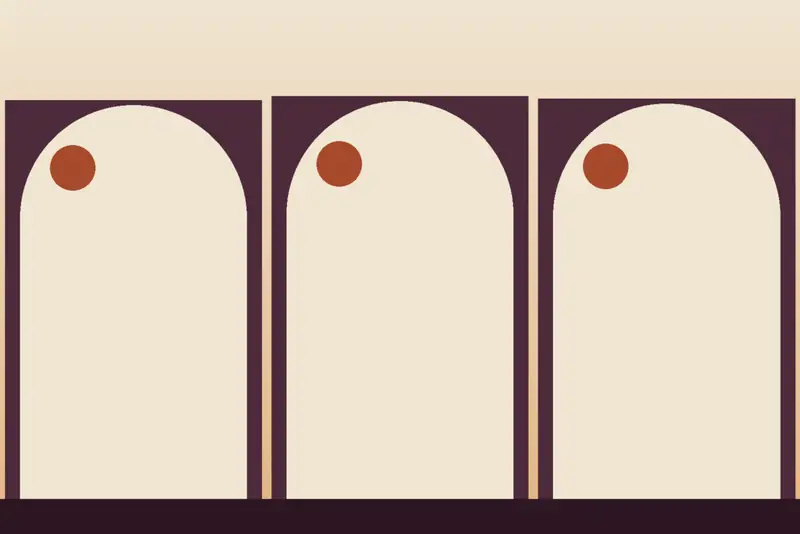
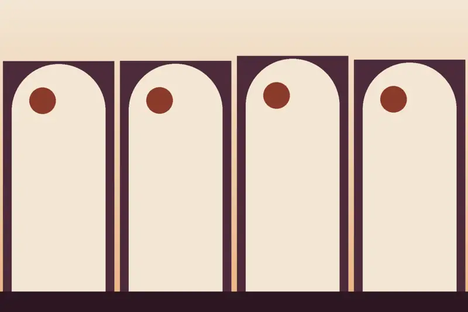
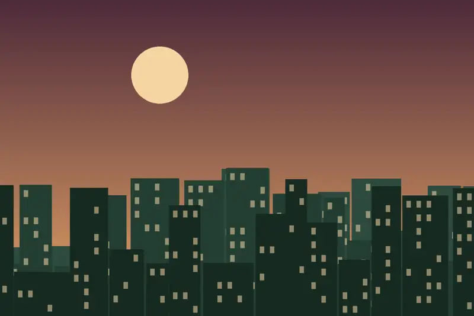
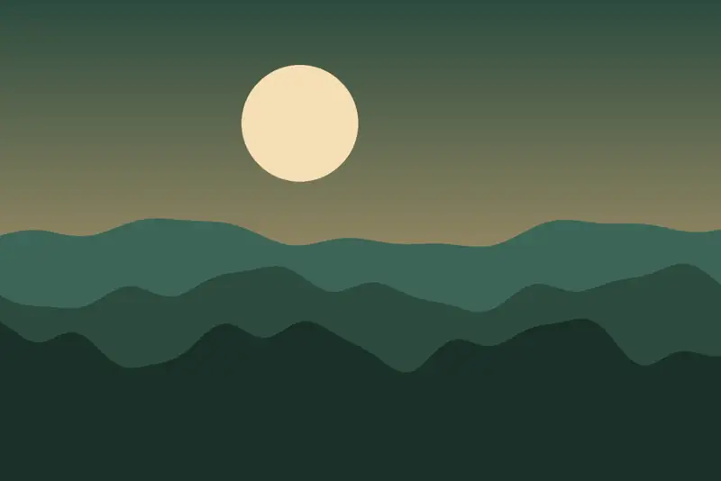
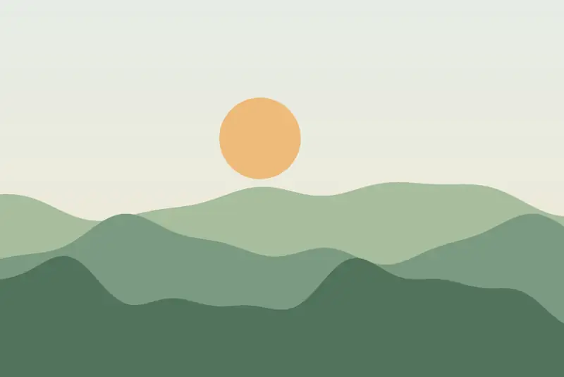
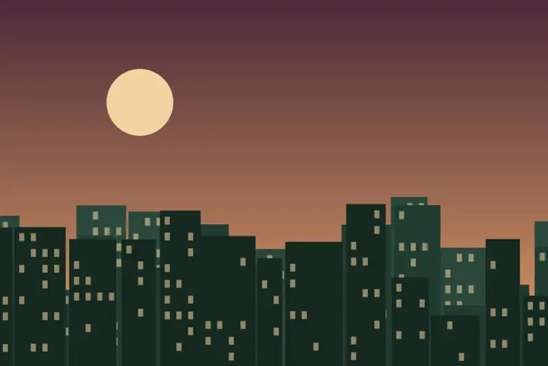
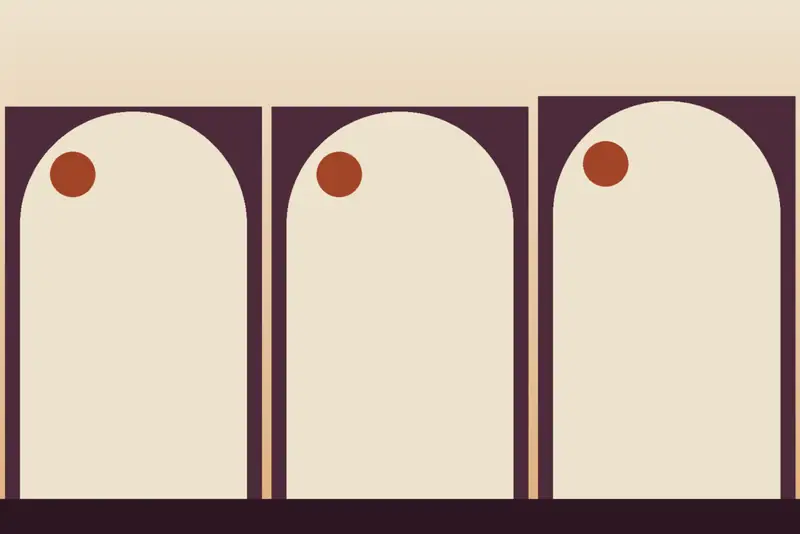
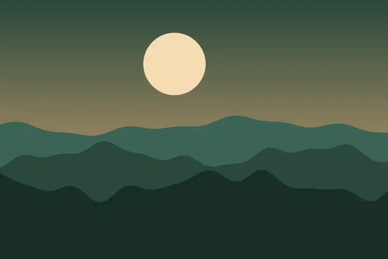
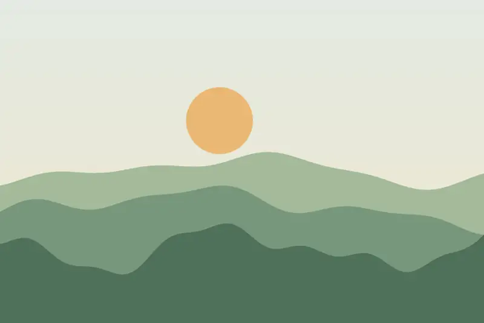

Estudio Classic
25 m² para 2 personas, en la parte trasera y sin vistas a la Alhambra, con cama de 180 x 200 cm, cocina equipada y ducha.
Ver disponibilidad →
Apartamentos turísticos en el Albaicín, en la Carrera del Darro.
Edificio histórico rehabilitado del siglo XVI que conserva su ala oeste y el Torreón, con techo mudéjar, alfarjes renacentistas y un patio central de columnas toscanas de mármol.
Trato familiar y personalizado: check-in automático 24 horas y atención por teléfono y WhatsApp 24 h, los 7 días.
De 2 a 6 personas, todos con cocina equipada. Las imágenes son ilustraciones y no muestran los apartamentos reales.

25 m² para 2 personas, en la parte trasera y sin vistas a la Alhambra, con cama de 180 x 200 cm, cocina equipada y ducha.
Ver disponibilidad →
27 m² para 2 personas, con vistas a la Alhambra, techo de madera, suelos de barro y cama de 160 x 200 cm.
Ver disponibilidad →
40 m² hasta 4 personas, con vistas a la Carrera del Darro, cama de 180 x 200 cm y sofá cama.
Ver disponibilidad →
63 m² hasta 6 personas, dos dormitorios y vistas al río Darro y la Torre de la Vela.
Ver disponibilidad →65 m² hasta 6 personas en el Torreón, con artesonado mudéjar y vistas a la Alhambra, el Valle del Darro y Plaza Nueva.
Ver disponibilidad →



En el Albaicín, Patrimonio de la Humanidad: la Alhambra, el Sacromonte y la Catedral, todo accesible a pie.
Carrera del Darro 13 · 18010 Granada, en el corazón del Albaicín, a los pies de la Alhambra.
Carrera del Darro 13 · 18010 Granada